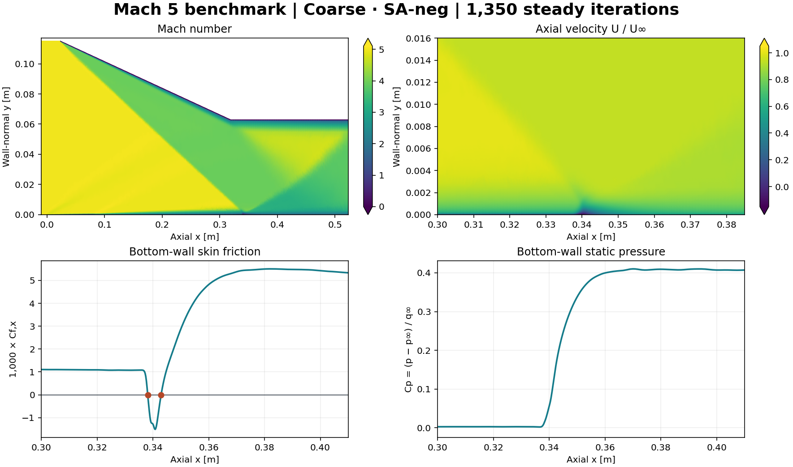
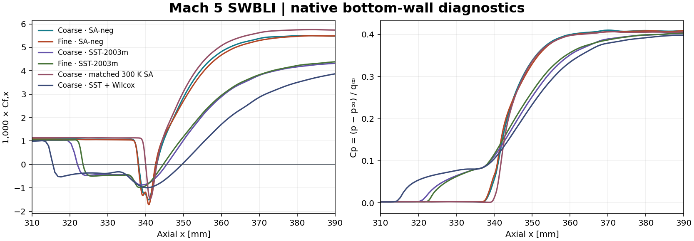
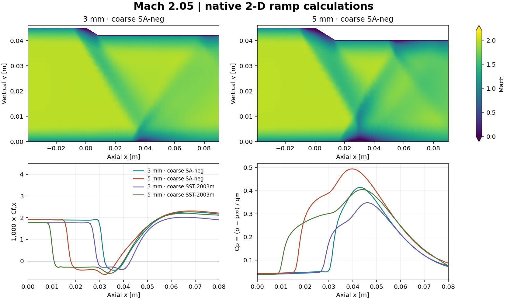

Native simulations · Mach 5
Where the shock meets the wall
A new SU2 study of the Schülein flat-plate benchmark. Compare two releases on one locked mesh and inspect the strain-limiter change that explains most of the gap.
The same shock. Two predictions.
A Mach 5 shock strikes the boundary layer and drives part of it backward. Compare two native SU2 solutions on the same 37,275-cell mesh, from the same initial field. The bar below each image marks where wall friction indicates reversed flow.
Both runs can balance mass and disagree near the wall.
Inlet and outlet mass flow check the global budget. The separation point depends on the local sign of wall shear. A small net imbalance can coexist with a large change in that sign.
A one-line control kept the solver, grid and restart fixed and changed only the strain input used to limit eddy viscosity. The separation length dropped by roughly 16 mm.
Investigation, uncertainty and replay ↗ · Native logs and input files ↗
Mach 5 simulation matrix
These are snapshots in a steady iterative solve. Whole-domain mass balance and the stability of wall separation are measured separately. The endpoint of each separated interval is interpolated between neighboring wall nodes with opposite signs of skin friction.
| Case | Cells | Iterations | Separation [mm] | Reattachment [mm] | Mass error [%] | Endpoint drift [mm] |
|---|
Endpoint drift is the larger movement of the two crossings between saved fields, with a working tolerance of 1 mm.

What changed

Transfer check at Mach 2.05
| Case | Cells | Iterations | Max upstream MAE [%] | Mass error [%] | Numerical disposition |
|---|

The Stanford measurement campaign includes three-dimensional and incoming-boundary-layer effects. The pilot approximates its duct in two dimensions. A good numerical mass balance cannot qualify the incoming velocity profile.
What remains open
The released data support differences in these computations. Physical validation remains on hold. Experimental velocity distribution for the Mach 5 comparison is restricted in the NASA archive. NASA Wind-US used a 300 K wall; the primary SU2 grid sweep used adiabatic walls. Comparisons must also respect turbulence-model versions and the distinction between iterative error and grid uncertainty.
SU2 V&V · NASA NPARC archive · Schülein et al., DLR · MOSE cross-code comparison